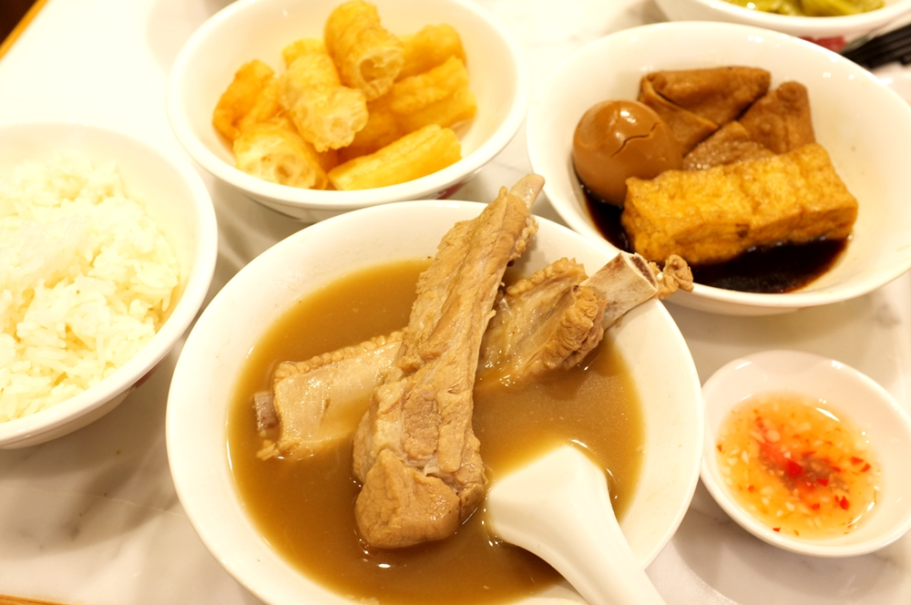

最近新店開幕還真多，信義區又多一間排隊美食，
來自新加坡『黃亞細肉骨茶NG AH SIO Taiwan』，星馬平價美食代表"肉骨茶"是許多去過星馬的朋友必吃的美食
『黃亞細肉骨茶』創立於1955年，傳承一甲子，被稱為最正宗的肉骨茶代表之一
店內、店外有70席採自助式，點完餐後會像美食街一樣給感應器，餐點好了自行取餐，餐具隨桌抽屜自取，肉骨茶單點一碗是260元，升級成套餐329元，
一種義大利蛋白脆餅。
以視覺上的滿足性這些東西算貴以不用到新加坡就能吃到新加坡人氣美食，算便宜，
一種義大利蛋白脆餅。
使用台灣究好豬當作食材，嚴選靠近豬背部里肌小排部位，強調不添加中藥材，以胡椒熬煮數小時，呈現金黃色澤
湯喝起來蠻溫潤香醇，要入喉時才覺得有點辣，很順口每一根都有10公分左右長度肋排，肥瘦比例剛好